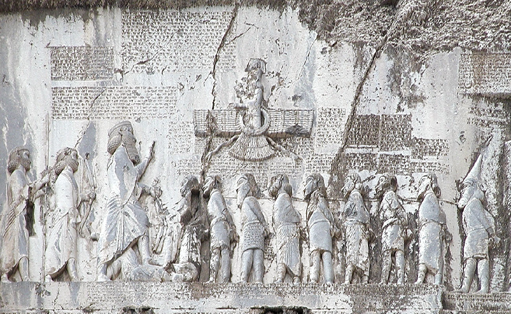

아시아 · 이란
베히스툰 비문 — 왕은 왜 자신의 즉위를 절벽에 새겼을까
다리우스 1세의 권력과 반란을 설명하는 제국의 목소리

이란의 베히스툰 절벽에는 왕과 포로의 모습, 여러 언어로 새긴 글이 남아 있다. 아케메네스 왕조의 다리우스 1세가 자신의 권력을 설명한 기념물이다. 단단한 돌에 새겨졌다고 해서 그 내용이 이해관계 없는 연대기가 되는 것은 아니다. 비문은 사건을 전하는 자료이면서, 누가 정당한 왕이고 누가 거짓말쟁이인가를 정하려는 정치적 주장이다.
01. 왕위에 오르는 일과 인정받는 일은 달랐다
기원전 522년 다리우스가 권력을 얻을 무렵 제국의 왕위 계승에는 큰 혼란이 있었다. 그가 군사적 행동을 통해 경쟁자를 제거했다는 사실과 자신의 통치를 모두가 정당하게 받아들인다는 것은 같은 일이 아니었다.
넓은 영토를 가진 제국에서는 중앙의 변화가 여러 지역의 움직임과 연결되었다. 새 왕은 궁정의 권력을 차지하는 데서 멈출 수 없었다. 지역의 저항을 진압하고 자신이 다스릴 자격이 있다는 설명도 만들어야 했다.
02. 다리우스는 경쟁자의 정체를 규정했다
비문에서 다리우스는 자신이 제거한 인물을 왕족을 사칭한 거짓된 인물로 설명한다. 이 서술을 따르면 그의 행동은 왕위를 빼앗은 것이 아니라 어긋난 질서를 바로잡은 일이 된다. 상대가 누구였느냐가 자신의 정당성을 결정하는 핵심이다.
그러나 왕이 남긴 설명을 곧바로 상대의 실제 정체에 대한 최종 판결로 삼을 수는 없다. 비문은 다리우스가 무엇을 주장했는지를 분명히 알려 준다. 그 주장이 사건 전체와 얼마나 일치하는지는 다른 증거와 함께 검토해야 한다.
왕의 설명에는 자신이 지켜야 할 계보와 경쟁자의 자격을 배제하는 논리가 결합되어 있다. 누가 왕족인가를 정하는 말은 지나간 가족사를 적는 일에 머물지 않는다. 현재의 복종을 요구하고 미래의 반란을 부당한 것으로 만드는 근거가 된다.
03. 거짓과 질서의 대립은 통치를 설명했다
다리우스의 이야기는 반란을 각각 다른 지역의 정치적 요구로만 보여 주지 않는다. 거짓을 말하는 자들이 질서를 어지럽히고 왕이 이를 바로잡는 구조로 엮는다. 자기편과 반대편은 도덕적으로도 구분된다.
이렇게 서술하면 무력의 승리는 단순한 힘의 우위보다 더 큰 의미를 얻는다. 왕은 진실한 질서의 수호자가 되고 반대자는 잘못된 주장에 속한 사람이 된다. 통치의 언어는 군대가 만든 결과를 사람들이 이해할 방식까지 정하려 한다.
신의 후원을 내세우는 표현도 왕권의 설명에 포함되었다. 군사적 결과를 신성한 질서와 연결하면 승리의 의미가 달라진다. 종교적 언어와 정치적 언어를 오늘의 구분처럼 완전히 나누면 비문이 전달하려 한 권위의 구조를 놓칠 수 있다.
04. 여러 언어는 여러 독자를 상정했다
비문에는 고대 페르시아어와 엘람어, 바빌로니아어의 설형문자가 쓰였다. 같은 왕의 권위를 서로 다른 언어 전통에 연결하는 작업이었다. 여러 지역을 가진 제국의 지배가 하나의 언어 환경 안에서만 이루어지지 않았음을 보여 준다.
그렇다고 제국의 모든 주민이 절벽 앞에서 세 언어를 읽었다고 상상해서는 안 된다. 비문의 존재와 내용의 전달은 다른 문제다. 다언어 기록은 왕실이 다루어야 했던 행정과 권력의 범위를 드러내는 단서다.
05. 그림은 글과 함께 승패를 배치했다
부조에서는 왕과 제압된 인물들의 관계를 눈으로 볼 수 있게 구성했다. 누가 우위에 있고 누가 패배했는지가 몸의 자세와 배치에 드러난다. 글을 읽지 못하더라도 권력의 차이를 알아보게 하는 장치다.
하지만 부조를 전투 현장의 정확한 장면을 촬영한 것처럼 읽을 수는 없다. 여러 사건과 인물을 한 공간에 배열한 왕실의 표현이다. 돌에 남은 자세는 사건 당시의 우연한 동작이 아니라 권력을 보여 주기 위해 선택된 모습이다.
높은 절벽에 남은 규모와 위치 자체도 기념물의 메시지에 속한다. 내용을 낱말로 옮기는 것만으로는 왕실이 어떤 존재감을 만들려 했는지 충분히 설명하기 어렵다. 기록은 글의 뜻뿐 아니라 어디에 어떻게 놓였는가로도 권력을 드러낸다.
06. 제국은 기념물만으로 운영되지 않았다
다리우스의 통치에는 넓은 영토를 관리하는 행정과 지역 권력의 조직도 필요했다. 각지의 자원과 세입, 명령의 전달을 다루어야 했다. 비문이 정당성을 주장했다면 일상의 통치는 그 주장을 실제 지배로 이어 가는 일이었다.
왕의 강한 모습을 보여 주는 기념물만으로 제국이 늘 일사불란했다고 결론 내릴 수는 없다. 반란을 반복해서 설명해야 했다는 사실 자체가 권력에 저항과 불안이 있었음을 드러낸다. 질서를 선언하는 말은 질서가 흔들렸던 흔적이기도 하다.
07. 자료의 의도는 자료의 가치를 없애지 않는다
왕실의 주장이 담겨 있다고 해서 베히스툰 비문을 쓸모없는 거짓말로 버릴 수는 없다. 권력자가 어떤 언어와 논리로 자신을 설명했는지는 다른 자료로 대신하기 어려운 역사적 정보다. 편향을 알아보는 일은 읽기를 중단하는 일이 아니다.
우리는 비문에서 사건에 대한 주장과 그 주장을 남긴 목적을 함께 읽을 수 있다. 누가 기록했으며 어떤 반대의 목소리는 빠졌는가를 물으면 돌은 더 많은 이야기를 들려준다. 영원해 보이는 기념물에도 권력을 설득해야 했던 순간이 들어 있다.
이야기의 바탕이 된 자료
- OpenStax, World History Volume 1 — The Persian Empire ↗확인일 2026-11-13
522왕위 계승과 다리우스의 정당성 주장/사칭·거짓·반란과 신의 후원/3언어/부조·행정. 왕실의 주장과 독립 검증을 구별하며 경쟁자 정체를 확정하지 않음.